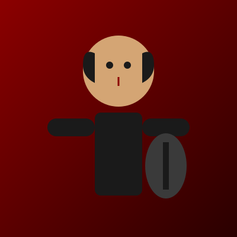
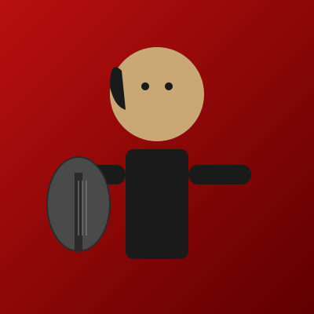
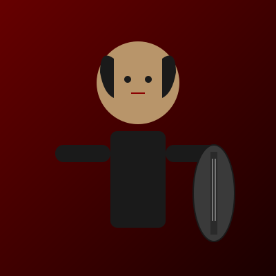
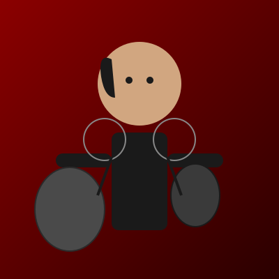

About Hexistenz
Forged in 2020, Hexistenz blends ritualistic black metal, doom-laden heaviness and industrial textures. Our songs explore decay, ritual, and the stages of unmaking. From underground basements to festival stages, we channel the abyss into every performance.
The Architects of Oblivion

K. — Vocals
Primal scream from the depths of consciousness. Raw energy channeled through ritualistic incantations.

R. — Guitars
Ritualistic riffs & lead melodies. Building walls of sound that echo through the abyss.

L. — Bass
Low end devastation. The foundation upon which monolithic structures are built.

M. — Drums
Monolithic percussion. Driving the rhythm of ritual and decay.
History & Sound
Since our formation, Hexistenz has released multiple EPs exploring themes of ritual, decay, and transcendence. Our latest work, "Abyssal Writ," pushes boundaries with layered soundscapes and intricate compositions. Each show is a ceremony—a moment where art and audience become one.